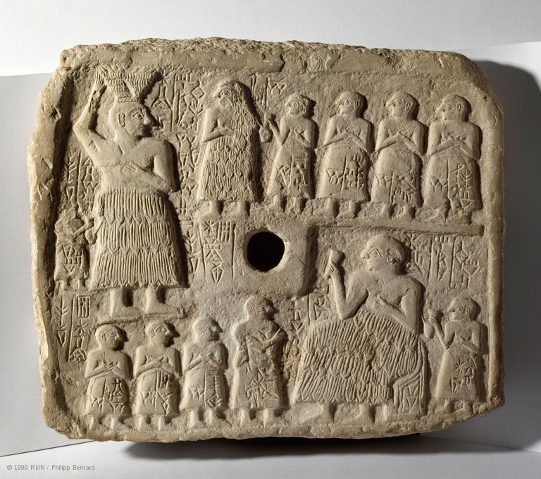
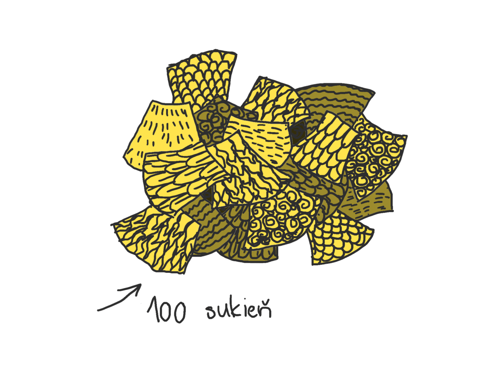
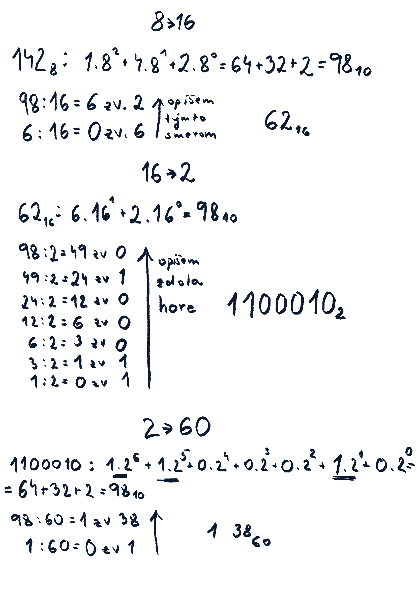
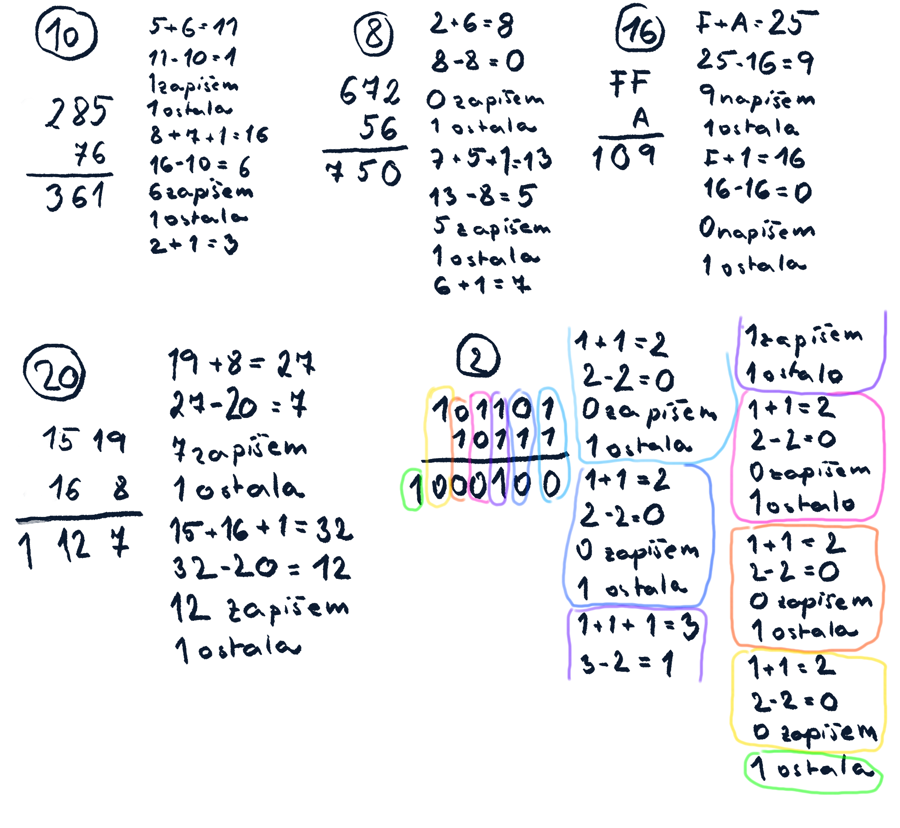
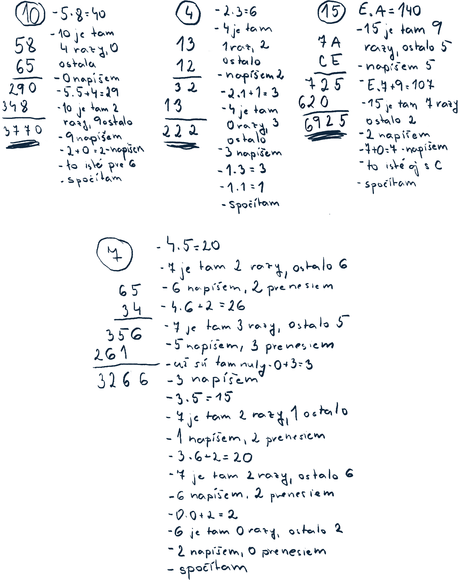
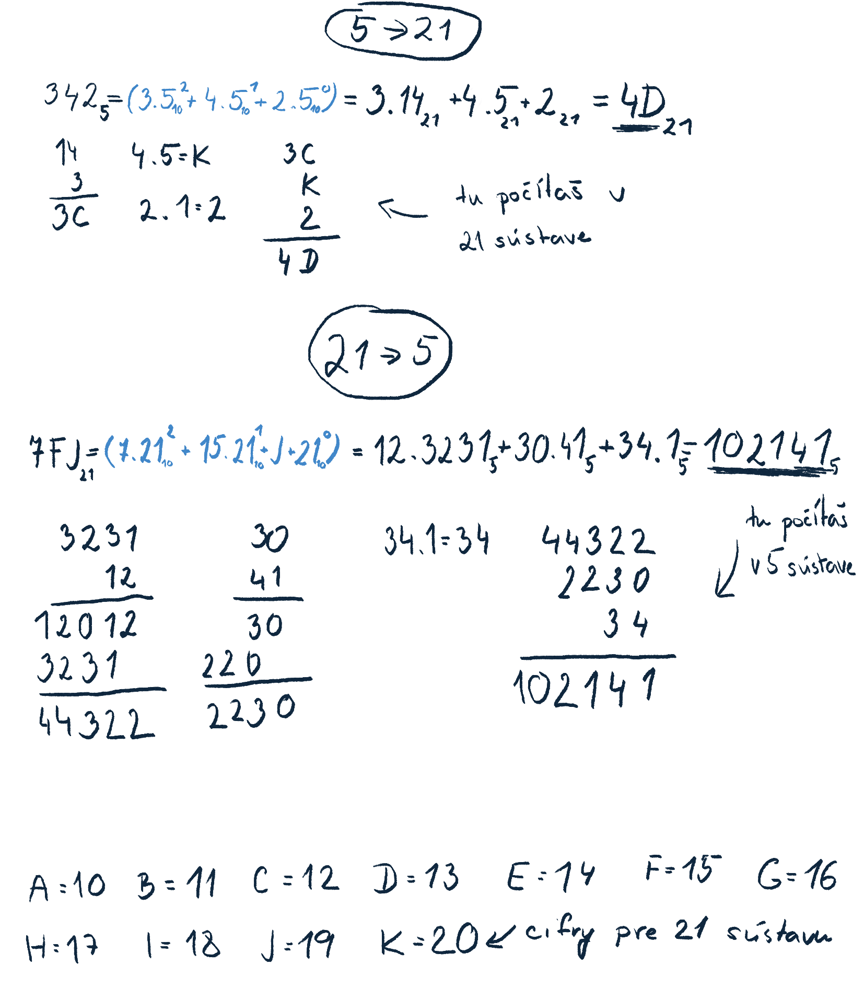

Číslená sústava je spôsob, akým sa dá zapísať číslo. Poznáme pozičnú a nepozičnú číselnú sústavu.
Nepozičná sústava
Starí Egypťania boli naozaj schopný národ. Ríša, ktorú založili im poskytovala stabilitu. Keďže už nemuseli bojovať o prežitie, mohli sa venovať aj iným veciam. Ich architektúra postavila pyramídy, chrámy a vztýčila veľké obelisky. V medicíne mohli robiť zložité operácie, ako je napríklad operácia očí alebo mozgu. Venovali sa aj astronómii a 365 dňový rok používame dodnes. Nič z toho by nedokázali bez matematiky. Ich výpočtom by však dnes rozumelo len veľmi málo ľudí, pretože nepoužívali také čísla, aké poznáme dnes. Ich čísla vyzerali takto:
Čísla zapisovali kombináciou týchto znakov. Ak mali zapísať napríklad číslo 23, tak napísali dva znaky pre desiatku a tri pre jednotku. Čísla mohli zapisovať sprava doľava, zľava doprava alebo aj zhora dolu. Číslo nezáviselo od umiestnenia znakov, ale od ich počtu. Tu je v hieroglyfoch napísané číslo 121 243:
𓆐𓂭𓂭𓆼𓍢𓍢𓎆𓎆𓎆𓎆𓏺𓏺𓏺
Tu je tiež to isté číslo 121 243:
𓏺𓏺𓏺𓎆𓎆𓎆𓎆𓍢𓍢𓆼𓂭𓂭𓆐
Takýto spôsob zapisovania znakov sa nazýva nepozičná číselná sústava. Nepozičná preto, lebo hodnota čísla nezávisí od pozície, na ktorom je znak napísaný, ale od počtu znakov.
Vieš pekne kresliť? No nevadí, aj tak si skús v hieroglyfoch napísať číslo 999 999. Ak si si to naozaj vyskúšal napísať, určite oceníš pozičnú sústavu, ktorú používame dnes. My zapíšeme toto číslo 6 znakmi a Egypťania na to použili 54 znakov. Takže keď sa ti nabudúce nebude chcieť učiť matiku, spomeň si na egyptské deti. Tie kým napísali číslo, tak ty už máš príklad vyrátaný aj dva razy.
Pozičná sústava
Pozičná číselná sústava si prešla dlhším vývojom, ako nepozičná. Asi preto, lebo ľuďom dlho trvalo prísť na to, ako ju majú správne robiť. Pôvod má u Sumerov. Starí Sumeri nepoužívali na písanie papyrusy ako v Egypte, ale mali hlinené tabuľky. Napísať 54 znakové číslo na papyrus je iné, ako ho vytĺcť do kameňa alebo hlinenej tabuľky. Keď nechceli starí Sumeri písať jedno číslo dva dni, museli pohnúť rozumom. My si históriu trochu zjednodušíme a vznik pozičnej sústavy predstavíme na jednej mladej sumerskej podnikateľke.

Obr. 1.: Kráľ Ur-Nanš a jeho rodina v sukniach z ovčej kože. Dcéra má dokonca celé šaty. [1]
Za vlády kráľa Ur-Nanša veľmi leteli sukne z ovčej kože. Sám kráľ si dal v nich niekoľkokrát vytesať selfíčko. Kto vtedy nemal sukňu z ovčej kože, akoby ani nebol. Krásna Lidda v tom videla vynikajúcu podnikateľskú príležitosť a dala sa tento módny kúsok vyrábať. Už sa blížil marec a s ním aj daňové priznania. Lidda musela dať daňovému úradu vedieť, koľko sukní ušila. Začala ich rátať, ale nechcelo sa jej to vytesávať do kameňa v nepozičnej sústave, tak ich počítala na prstoch. Keď minula všetky prsty, poprosila kamarátku Etanu, aby jej rátala, koľko razy minie všetky prsty. Etana teda rátala, koľko razy Lidda napočítala do 10. Zachvíľu aj Etana minula všetky prsty. Poprosili ďalšiu kamarátku Babum, aby zarátala prst vždy, keď Etana naráta do 10. Mohlo to vyzerať asi takto:

Obr. 2.: Lidda počíta sukne
Počet predaných sukní musela Lidda doručiť na daňový úrad. Držať vystrčené prsty celú cestu je náročné. To človek môže aj kŕč dostať do ruky. Mladé Sumerky vedeli písať, tak im napadlo, že si zapíšu, koľko prstov napočítala Lidda, koľko Etana a koľko Babum. Počet Liddiných prstov hovoril o tom, koľko kusov je sukní. Etana rátala to, koľko razy narátala Lidda do 10. Babum počítala, koľko razy Etana narátala do 10. (Keď Etana naráta do 10, to znamená, že Lidda narátala do 100, teda Babum ráta počet stoviek). Na prvé miesto zapísali počet prstov, ktorých hodnota bola najväčšia (prsty Babum - stovky) a na posledné miesto počet prstov, ktorých hodnota bola najmenšia (prsty Lidda - jednotky). Takto nejako vznikla desiatková pozičná číselná sústava. Či ju vymyslela naozaj Lidda, to nevieme, Sumerov sme navštíviť neboli. To čo môžeme považovať za historické fakty je, že desiatková sústava bola vynájdená vďaka počítaniu prstov na rukách. Aj mená sú naozaj sumerské, aj keď nie dievčenské. Patria sumerským kráľom. Nech tí čo majú radi dejepis odpustia :).
Už vieme, ako asi vznikli pozičné sústavy, tak si môžeme teda o nich niečo povedať.
V pozičnej sústave záleží na poradí cifier. Je to preto, lebo pozícia dáva cifre váhu. To znamená, že keď je napríklad číslica 4 na pozícií jednotiek, máme 4 kusy niečoho. Keď je na pozícii desiatok, máme 40 kusov. Na pozícií stoviek reprezentuje 400 kusov.
V každej číselnej sústave je k dispozícií nejaký počet cifier. Tento počet je základ sústavy. Z rôznych dôvodov (povieme si o nich), viac cifier sa použiť nedá. Keď sa pri počítaní cifry minú, presúvame sa na ďalšiu pozíciu. Pozícia dáva číslici váhu. To znamená, že tá istá cifra na inej pozícií, vyjadruje iný počet (napr. cifra 4 na pozícií jednotiek vyjadruje 4 sukne a na pozícií desiatok je to 40 sukieň). Kvôli tomu, že na každej pozícií má číslica inú váhu, v pozičnej sústave záleží na poradí čísiel. Napríklad čísla 248, 482, 842 sú všetky zložené z číslic 2,4,8 a predsa neznamenajú to isté. Aby sme videli, akú váhu dáva pozícia cifre, vieme si číslo zapísať takto: $$cifra\ \cdot\ základ\ sústavy^{pozícia-1} +...+ cifra\ \cdot\ základ\ sústavy^{pozícia-1}$$. Na čísle 248 zápis vyzerá takto: $$2 \cdot 10^{2} + 4 \cdot 10^{1} + 8 \cdot 10^{0}$$
Pozíciu počítame od nuly, aby sme mohli dostať jednotky. Lebo $10^{0} = 1$. Skús si vedľa na papier takto rozpísať číslo 456 987 123.
Desiatková sústava
Desiatková sústava je odvodená od počtu prstov. Máme v nej 10 číslic: 0,1,2,3,4,5,6,7,8,9. Jej základ je teda 10. Do vyššieho rádu sa prechádza, keď sa dovŕši 10 prstov. Číslo 121 343 sa dá zapísať takto: $$121\ 243 = 1\cdot10^5 + 2\cdot10^4 + 1\cdot10^3 + 2\cdot10^2 + 4\cdot10^1 + 3\cdot10^0$$
Na každej pozícií má číslica inú váhu. Sú to jednotky, desiatky, stovky, tisícky, atď. Číslica hovorí, koľko kusov danej váhy máme. Teda koľko máme jednotiek, desiatok, stoviek atď.
Dvojková sústava
Dvojková sústava vznikla kvôli počítačom. Tie vedia rátať iba s dvomi prstami :D . Ok, počítače prsty nemajú, ale vedia rátať iba s tým, či v ich pamäťovej bunke je hodnota alebo nie. Technické pozadie rozoberieme inokedy a necháme si iba vedomosť, že vedia rátať iba s dvomi číslami. Základ sústavy je preto 2. Číslo v dvojkovej sústave je zapísané číslicami 0 a 1, napr. 101110101. Vieme ho zapísať podobne ako v desiatkovej sústave:
$$1\cdot2^8 + 0\cdot2^7 + 1\cdot2^6 + 1\cdot2^5 + 1\cdot2^4 + 0\cdot2^3 + 1\cdot2^2 + 0\cdot2^1 + 1\cdot2^0$$
Šestnástková sústava
Vymysleli ju ľudia od počítačov, aby do nej mohli prevádzať čísla z dvojkovej sústavy. Číslo v šestnástkovej sústave je kratšie a teda prehľadnejšie, ako v dvojkovej. Vďaka tomu robia pri výpočtoch menej chýb. Používajú sa cifry 0,1,2,3,4,5,6,7,8,9,A,B,C,D,E,F. Príklad čísla b0dfe5:
$$b\cdot16^5 + 0\cdot16^4 + d\cdot16^3 + f\cdot16^2 + e\cdot16^1 + 5\cdot16^0$$
Vedel si, že číslo b0dfe5 v počítačoch reprezentuje farbu, ktorou je napísaný tento text?Farbou číslo 003152 je napísaný tento text a tento text má farbu 588bae.
Šesťdesiatková sústava
Táto sústava má pôvod zasa u Sumerov. Vymysleli si ju na to, aby mohli veci deliť na viac celých častí. Potrebovali to kvôli nejakým astronomickým výpočtom. Napríklad, ak by mala hodina 10 častí, tak by ju vedeli rozdeliť na dve alebo na päť menších častí. Keď má hodina 60 častí (minút), tak sa dá rozdeliť na dve, tri, štyri, päť, šesť a ďalších veľa častí. Znakov mali teda 60. My ich nepoznáme, tak si niektoré z nich vymyslíme. Znak 😃 bude reprezentovať počet 4, znak 😉 bude počet 15, znak 😜 bude 20, znak 😢 bude 28, znak ⭐ bude 33, znak 🌏 bude 40, znak 🌺 bude 51 a znak 🍉 bude 56. Číslo 😃 😉 😜 😢 ⭐ 🌏 🌺 🍉 vieme zapísať takto:
My ju dnes používame v už spomínanom čase. Hodina má šesťdesiat minút a minúta má šesťdesiat sekúnd. Tiež sa používa v geometrii. Jeden stupeň má šesťdesiat minút.
Tvoja sústava
Ako si si iste všimol, v každej sústave sa dá číslo zapísať spôsobom číslica . základpozícia-1+...+číslica . základpozícia-1. Základ samozrejme nemusí byť z tých, ktoré sa používajú. Môžeš si ho vybrať sám. Či použiješ základ 4, 23, 35, 1 000 0000 je na tebe. Keď budeš mať rozmyslený základ, tak treba číslice. Tých je s nulou toľko, koľko máš základ. Keď bol základ 16, mali sme 16 cifier, keď bol základ 2, mali sme dve cifry. Všimni si, že čím väčší je základ sústavy, tým dokážeš vyjadriť väčší počet s menej číslicami.
Prevody cez desiatkovú sústavu
Previesť číslo priamo zo sústavy do sústavy je ťažšie, pretože my sme zvyknutí počítať v desiatkovej sústave. Preto budeme prevádzať čísla cez desiatkovú sústavu. Postup je taký, že si najprv prevedieš číslo z nejakej sústavy do desiatkovej a potom z desiatkovej do inej. Do desiatkovej sústavy prevedieš číslo tak, že ho napíšeš rozšíreným spôsobom. Základ sústavy je sústava, z ktorej číslo prevádzaš. Potom to spočítaš. Z desiatkovej do inej sa prevádza tak, že sa číslo v desiatkovej delí základom sústavy, do ktorej prevádzame. Zvyšok po delení si zapíšeš a výsledok delenia delíš znovu.
Na obrázku je príklad pre číslo 98. Najprv prevedieme číslo z osmičkovej do šestnástkovej, potom zo šestnástkovej do dvojkovej a nakoniec z dvojkovej do šesťdesiatkovej. Pri číslach sú napísané spodné indexy. Znamenajú základ sústavy, v ktorých je zapísané číslo. Pri šesťdesiatkovej sústave by sme chceli upozorniť na jednu vec. Všimni si výsledok, keď prevedieš číslo z 2 do 60. Je to 1 38. Naschvál sme tam nechali medzeru, aby bolo jasné, že 1 a 38 sú oddelené. Číslo 38 tu vystupuje ako cifra v šesťdesiatkovej sústave. Práve z tohto dôvodu je dobré mať pre každý počet v sústave práve jeden znak. Ak by sme to napísali spolu (138), nevedeli by sme, aké číslo to je (či je to 138, 1 38, 13 8). Môžeš si to skúsiť previesť do desiatkovej a uvidíš, že ti to dá vždy iný výsledok. Tento istý problém sa vyskytuje aj v šestnástkovej sústave. Riešením je cifry väčšie ako 9 nahradiť písmenami. Keď sa minú písmená, tak si treba vymyslieť niečo iné, napríklad smajlíkov alebo čo.

Obr. 3.: Prevody cez desiatkovú sústavu
Týmto by sme chceli skončiť číselné sústavy. Už vieš, ako vznikla pozičná a nepozičná sústava. Vieš aj rozdiel medzi nimi. Vieš, že pozičná sústava nemusí byť len desiatková a tiež vieš prevádzať z jednej sústavy do druhej. Teda aspoň dúfame, že sme ťa ešte viac nepoplietli, ale práve naopak, že sme ti trošku pomohli :) .... ak ťa baví čítať ešte ďalej, je tu nejaká matika navyše. Tú už vedieť nemusíš, iba ak by ťa to zaujímalo.
Pre tých, ktorých to ešte stále baví čítať
UPOZORNENIE!!! ... toto ti už netreba vedieť. Ak sa ti už nechce čítať ďalej nemusíš, máš voľno :D. Ale ak by ťa to náhodou chytilo, sú tu také lahôdky, ako spočítavanie čísiel v rôznych sústavách alebo prevody priamo medzi nimi. Ak si rozhodnutý čítať ďalej, tak sa osloboď od toho, že 2+2=4, lebo nie je. A možno predsa áno, aj keď nie.
Spočítavanie čísiel v rôznych sústavách
V každej číselnej sústave funguje spočítavanie čísiel tak, ako sme zvyknutý v desiatkovej. Keď chceme spočítať dve čísla, napíšeme si ich pod seba. Spočítavame čísla nad sebou, pričom začneme v najnižšom ráde. Koľko razy prejdeme základ sústavy, toľko si prenášame do vyššieho rádu. V príklade je ukázané spočítavanie čísiel v desiatkovej, osmičkovej, šestnástkovej, dvadsiatkovej a dvojkovej sústave. Je to tam napísané spolu s postupom. Len tak pre pripomenutie, v dvadsiatkovej sústave sú všetky čísla do 20 cifry. Teda 15, 16, 19 sú cifry a nie samostatné čísla. Pri dvojkovej sústave je postup rozdelený farebne, lebo je veľmi dlhý a neprehľadný.

Obr. 4.: Spočítavanie čísiel v rôznych sústavách
Na začiatku sme tvrdili, že 2+2 nemusí byť štyri. V trojkovej sústave to skutočne tak nie je. Výsledok je ..., to necháme na teba. Dôležité však ostáva, že stále označuje ten istý počet, ako v desiatkovej sústave alebo číslo 100 v dvojkovej.
Násobenie v rôznych sústavách
Pri násobení, rovnako ako pri sčítaní, môžeme použiť ten istý postup z desiatkovej sústavy. Je to všeobecný postup, pre všetky sústavy, ale my ho poznáme z desiatkovej. Zasa začneme tým, že si napíšeme čísla pod seba. Zoberieme poslednú číslicu zo spodného radu, vynásobíme ňou všetky vo vrchnom a zapíšeme. Zoberieme predposlednú, vynásobíme všetky vo vrchnom a zapíšeme. Zapisujeme do nového riadku a posunieme sa o jednu číslicu doľava. Toto spravíme pre všetky číslice v spodnom rade. Zapísané čísla spočítame a máme výsledok. Násobenie prebieha tak, že vynásobíš čísla, zistíš, koľko razy sa tam nachádza základ sústavy (my sme zvyknutý na 10), vyrátaš si koľko ti ostane. Zvyšok zapíšeš a počet výskytov základu sústavy prenesieš o rád vyššie. Tam ho pripočítaš k číslam, ktoré si násobil v tomto ráde. Ak to nie je z tohto opisu jasné, máme na mysli to násobenie pod seba, ktoré sa učí niekedy na základnej škole. Možno aj na prvom stupni. Pred tým, než pôjdeš na príklad, vynásob si prosím nejaké dve čísla pod seba a hovor si nahlas postup, nech si ho zopakuješ. Máš už hotovo? Dobre, môžeme ísť násobiť v desiatkovej, štvorkovej, päťnástkovej a sedmičkovej sústave. Sedmičková sústava je rozobraná podrobnejšie, začni tou. Päťnástková sústava používa cifry zo šestnástkovej. Aby si nemusel dlho googliť sú to: A=10, B=11, C=12, D=13 a E=14.

Obr. 5.: Násobenie čísiel v rôznych sústavách
Ak si budeš chcieť vychutnať túto matematickú dobrotu na vlastnej koži, pravdepodobne nebudeš mať výsledky dobré hneď na prvý pokus. Nezúfaj. Ani my sme nemali. Hlava si musí zvyknúť, že 2+2 nemusí byť 4.
Prevod priamo zo sústavy do sústavy
Sčítavanie a násobenie v predchádzajúcich kapitolách sme nerobili len tak. Budeme to využívať pri prevode priamo zo sústavy do sústavy. Ako príklad sme si vybrali päťkovú a dvadsaťjednotkovú sústavu. Pri sústave so základom 21 sme sa inšpirovali šestnástkovou a cifry väčšie ako 9 sme nahradili písmenami. Spolu s ich hodnotami sme ich napísali na spodok príkladu. Tu sú kroky, ktorými sme dostali k výsledku:
vyberiem si číslo, ktoré chcem previesť. Môžeme ho označiť dolným indexom, aby sme vedeli, z akej sústavy prevádzame. V našom prípade sú to 342 v päťkovej a 7FJ v dvadsaťjednotkovej sústave.
druhý krok sa tvárime, že nerobíme, lebo základ sústavy si napíšeme v desiatkovej sústave. Pomôže nám to pri prevádzaní čísla do druhej sústavy. V príklade sú to tie bledomodré zátvorky.
číslo si napíšeme v rozšírenom zápise. Základ sústavy je ten, z ktorej chceme previesť. Čiže ak prevádzame z 5 do 21, tak základ bude 5. Ale pozor, tu sa dá pomýliť, pretože základ síce patrí sústave, z ktorej prevádzame, ale je už napísaný v sústave, do ktorej prevádzame. Ak prevádzame z 5 do 21, tak bude napísaný v 21-tkovej sústave. V tejto sústave takisto napíšeme aj cifry. Vznikne nám teda rozšírený zápis čísla, v sústave, do ktorej prevádzame. V našom príklade je to výraz hneď za bledomodrými (za druhým znamienko =).
rozšírený zápis spočítame. Vynásobíme čo treba vynásobiť a zrátame, čo treba zrátať. Samozrejme, nezabúdame, že počítame v sústave, do ktorej chceme číslo previesť.
keď už sme spočítali všetky členy, ktoré sa násobili, máme výsledok. V príklade je to to podčiarknuté.
to najlepšie na záver. Tento postup sa dá aplikovať nech prevádzaš z akejkoľvek sústavy do hocijakej inej. U nás môžeš vidieť prevod z 5 do 21 a naopak z 21 do 5.

Obr. 6.: Prevádzanie priamo zo sústavy do sústavy
Či vlastné číselné sústavy niekedy využiješ, ťažko povedať. Niečo sme ti však predsa chceli ukázať. Chceli sme ťa trochu vytrhnúť zo zaužívaných dráh myslenia a ukázať ti, že aj taká obyčajná vec, ako spočítavanie dvoch čísiel, môže byť zaujímavá.